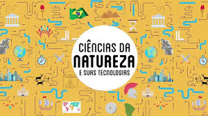

Gincana - Lixo Eletrônico 3ºs Anos
Voltar para a página das Áreas
Este foi um trabalho em que tivemos que juntar o máximo de lixo eletrônico possível para a doação a uma corrente chamada GREEN ELETRON. Obtivemos um resultado impressionante: apenas minha sala conseguiu acumular 2 toneladas de lixo eletrônico, enquanto, no geral, todo o terceiro ano de TI conseguiu arrecadar mais de 7 toneladas para doação.